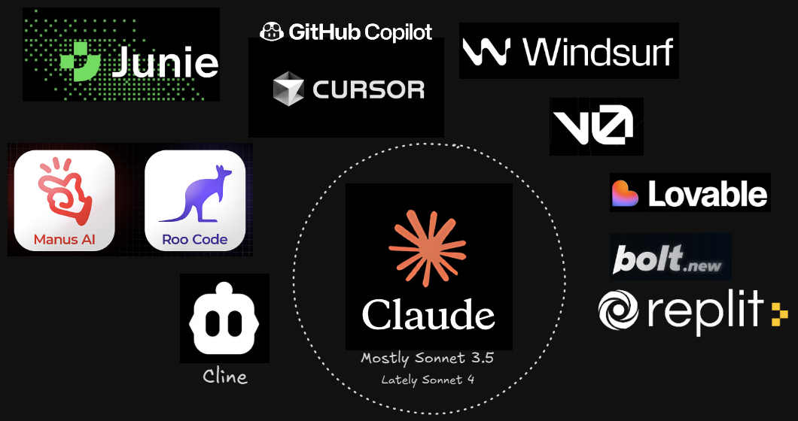
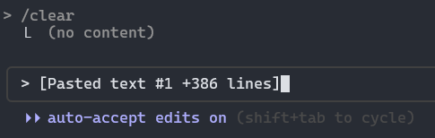
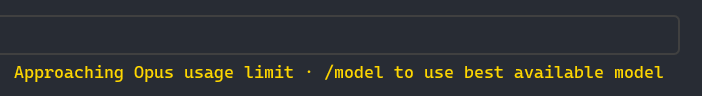
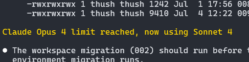
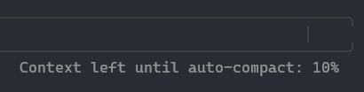
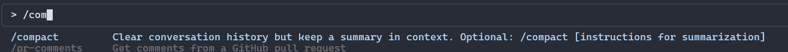

✻ Effectively using Claude Code in July 2025
Did you know?
State of Play
Claude Chat
claude.aiEnter Claude Code...
✻ Welcome to Claude Code
██████╗██╗ █████╗ ██╗ ██╗██████╗ ███████╗ ██╔════╝██║ ██╔══██╗██║ ██║██╔══██╗██╔════╝ ██║ ██║ ███████║██║ ██║██║ ██║█████╗ ██║ ██║ ██╔══██║██║ ██║██║ ██║██╔══╝ ╚██████╗███████╗██║ ██║╚██████╔╝██████╔╝███████╗ ╚═════╝╚══════╝╚═╝ ╚═╝ ╚═════╝ ╚═════╝ ╚══════╝ ██████╗ ██████╗ ██████╗ ███████╗ ██╔════╝██╔═══██╗██╔══██╗██╔════╝ ██║ ██║ ██║██║ ██║█████╗ ██║ ██║ ██║██║ ██║██╔══╝ ╚██████╗╚██████╔╝██████╔╝███████╗ ╚═════╝ ╚═════╝ ╚═════╝ ╚══════╝
Press ENTER to continue
Claude Code is ready!
✻ Welcome to Claude Code!
/help for help, /status for your current setup
cwd: /home/thushan/projects/talk-claude-code/
Tips for getting started:
- Run /init to create a CLAUDE.md file with instructions for Claude
- Use Claude to help with file analysis, editing, bash commands and git
- Be as specific as you would with another engineer for the best results
What is Claude Code?
- Agentic CLI tool for code assistance and automation.
- Understands the entire codebase - no manual selection required.
- Analyses, documents, refactors, debugs and write tests for you.
- Analyses your task, creates a plan, executes on it with safety.
- Can switch models (Eg. Opus 4) for deeper thinking
- Multiple execution modes: Default, Plan, Auto... even YoLo 🪩
- Editor-agnostic with hooks + per-project config support.
- CLI editing is clunky, but we'll ways to overcome this
- Natively supports Windows now, but bash commands!
Mammoth Refactor: Olla
Clunky Chunky Claude Code
Pasting a prompt into the terminal can be a bit awkward.
So like Cursor / Windsurf / Junie?
- Cursor / Windsurf: IDE-first, VS Code LangServer
- Junie: IDE-first, Jetbrains Context + ML Models
- Claude Code: Terminal-first, editor-agnostic
- All are agentic - Claude Code just prefers a shell over a sidebar.
- Modes: Plan, Auto, YoLo vs. manual confirm (Cursor) or auto-patch (Windsurf), Brave Mode (Junie)
- Context usage: CC uses full 200k; Cursor chunks; Windsurf tracks active files, Junie intelligently manages context
- Stability: CC is responsive & can interact as needed during session
Matter of Cost
- Claude Code: Tracks and displays token usage live
- Use via existing Plan (Claude) or pay-as-you-go
- No surprise charges - we'll look at some tooling to track usage
- Cursor and Windsurf: pricing varies by tier, usage less visible
- Both have limits, depends on tier and how much you use
- Claude, may tell you hold yer horses for a bit
Let's Recap: Claude Models
🚀 Haiku
Fastest and most cost-effective. Great for lightweight coding tasks, scripts and automation flows.
🔥 Sonnet
Balanced power and speed. Ideal for everyday dev tasks, debugging and broader code edits.
🧠 Opus
Most capable. Best for complex reasoning, deep refactors and multi-step agentic workflows.
Let's Recap: Claude Code Pricing
💳 Claude Plan
Use your existing Anthropic Claude monthly or prepaid yearly plan with Claude Code.
Pro / Max (5x | 20x) Levels - see plans
💸 Pay As You Go
For periods of heavy, short-term demand, such as codebase migrations, massive refactoring, hackathons or crunch time.
Let's Recap: Claude Pricing - PAYG API Credits
| Model | Input | Output | Context | Best For |
|---|---|---|---|---|
|
Haiku 3.5
|
$0.80 / 1M | $4 / 1M | 200K | Quick edits, simple tasks |
|
Sonnet 4
|
$3 / 1M | $15 / 1M | 200K | Daily development |
|
Opus 4
|
$15 / 1M | $75 / 1M | 200K | Complex refactors |
| 💡 Prices as of June 2025. 1M = 1 million tokens | ||||
Claude Model Citizen
With a Subscription, you'll have limits......and Claude will tell you!

You'll auto-switch from Opus to Sonnet when you do! 
Grand Tour
Claude Code
anthropic.com/claude-codeMake sure you have Node v18+
Install Claude Code
2 packages are looking for funding
run `npm fund` for details
Configure Claude Code
✻ Welcome to Claude Code
Let's get started.
Choose the text style that looks the best with your terminal:
...Configure Claude Code
✻ Welcome to Claude Code
Claude Code can now be used with your Claude subscription or billed based on API usage through your Console account.
Select login method:
- Claude account with subscription
Starting at $20/mo for Pro, $100/mo for Max - Best value, predictable pricing - Anthropic Console account
API usage billing
Claude Concepts
the basicsClaude Code Modes
- Plan Mode (readonly) Shift+TAB
Claude will analyse & research the codebase, then present a plan of action.Avoids the 'don't code, just asking' messages.
No unwanted edits, consistent formatted response & efficient token use
- Auto Mode (regular) Shift+TAB
Claude will automatically edit files, run commands and execute on plan.
TIP: Plan into an md file, iterate then execute in Auto mode.
Importance of Claude.md
Claude.md is a succinct project-specific instruction file.
- Declared tech stack and version info
- Key folders and their responsibilities
- Essential commands for build, test, deploy
- Code style and formatting rules
- Branch names and commit message style
- Important files Claude should know about
- Areas Claude must never change
Bit like .cursor/rules/ or .junie/guidelines.md
Example Claude.md
# Project Overview This is a .NET 8 C# web application using ASP.NET Core, Entity Framework Core, and Razor Pages. It’s a multi-layered architecture with Models, Services, and Controllers. ## Tech Stack - .NET 8 - ASP.NET Core - C# - Entity Framework Core - SQL Server - xUnit for tests ## Project Structure - `Controllers/` → API endpoints (REST) - `Models/` → Domain models and DTOs - `Services/` → Business logic - `Data/` → DBContext and EF configurations - `Pages/` or `Views/` → Razor Pages or MVC Views - `wwwroot/` → Static assets - `Tests/` → Unit tests (xUnit) ## Commands - `dotnet build` - `dotnet run` - `dotnet test` - `dotnet ef migrations add` - `dotnet ef database update` ## Code Style - Use PascalCase for public types and methods - Use camelCase for private fields - Async methods end in `Async` - Use expression-bodied members where clear - Prefer dependency injection via constructor ## Repository Guidelines - Branches: `feature/ABC-123-name`, `bugfix/ABC-456-name` - Commits: ` : short summary` (e.g., `fix: handle null in service`) - Prefer squash and merge ## Important Files - `Program.cs`, `Startup.cs` → App entry/config - `appsettings.json` → Configuration - `Data/ApplicationDbContext.cs` → DB context - `Services/*.cs` → Core business logic ## Do Not Touch - Legacy integrations in `Services/Legacy/` - `Startup.cs` bootstrapping unless explicitly asked - Auth setup in `Program.cs` unless requested - Do not generate UI markup unless requested
Claude.md Locations
| Location | Scope | Use Case | VCS Safe? |
|---|---|---|---|
~/.claude/CLAUDE.md |
Global | Personal defaults, universal behaviours | No (local-only) |
your-repo/CLAUDE.md |
Project-wide | Team-wide shared context | ✅ Yes |
your-repo/feature/CLAUDE.md |
Scoped | Fine-grained control per folder/feature | ✅ Yes |
CLAUDE.local.md |
Local override | Personal tweaks not checked into git | No (add to .gitignore) |
| 💡 Files are merged in order: local → subdir → project → global | |||
Generate & Refine Claude.md
I'll analyze the codebase to create a comprehensive CLAUDE.md file. Let me start by exploring the project structure and key files.
Update Todos
- ☐ Explore project structure and identify key directories
- ☐ Read README.md and other documentation files
- ☐ Analyze build configuration and scripts
- ☐ Identify testing framework and commands
- ☐ Create comprehensive CLAUDE.md file
- ☐ Check for existing CLAUDE.md, Cursor rules, or Copilot instructions
✻ Herding… (220s · ⚒ 1.4k tokens · esc to interrupt)
Getting Started
📗 Greenfields
- Always setup git / vcs
docs/&docs/_prompts- Establish coding standards
- Incrementally engineer
- Opt for TDD Style
- Encourage tests in prompts
📙 Brownfields
- Use git worktrees / branches
- Generate / Tweak
Claude.md - Generate
docs/for context - Understand existing patterns
- Incremental improvements
- Isolated, non-critical components
Live Demo Time!
Little less conversation,
& lot more action!
Claude Concepts
the advancedClaude The Thinker
You can encourage Claude to think harder with certain keywords in prompt.
- think
- think harder
- ultrathink
ultrathink is ideal for Opus model usage
ultrathink apparently allocates ~32K tokens
Claude gives more consideration to planning, design & debugging
Claude The Forgetful
Claude doesn't remember past sessions...
...it builds short-term memory as you work.
- 200K token context limit (Opus)
- Session memory grows with each action
- Earlier context may get trimmed
Use /compact to summarise your session and free up context.
Helps before long tasks like refactors or tests code/fixes
Doesn't persist anything — just condenses runtime memory
Claude Memory Management
Claude Code does manage it's own memory...

...but you can help it out.

Yolo Mode
Use with caution - no confirmation, no plan, just do it, Claude.
# Claude Code executes all operations without any permission prompts, including file modifications, command execution and system operations.
# The flag name deliberately includes "dangerously" to signal the security implications of removing all restrictions.
Development environments have been destroyed in this mode!
It's Demo Time!
Jean Claude van Daaaayeeeem!
Tools for Claude Code
10x your 10xClaude Code VSCode Extension
vscode: Claude Code ExtensionClaude Code Usage
╭──────────────────────────────────────────╮ │ │ │ Claude Code Token Usage Report - Daily │ │ │ ╰──────────────────────────────────────────╯ ┌────────────┬────────────────────┬───────────┬───────────┬───────────────┬──────────────┬───────────────┬─────────────┐ │ Date │ Models │ Input │ Output │ Cache Create │ Cache Read │ Total Tokens │ Cost (USD) │ ├────────────┼────────────────────┼───────────┼───────────┼───────────────┼──────────────┼───────────────┼─────────────┤ │ 2025-07-14 │ - opus-4 │ 1,225 │ 27,748 │ 897,182 │ 29,576,651 │ 30,502,806 │ $59.63 │ │ │ - sonnet-4 │ │ │ │ │ │ │ ├────────────┼────────────────────┼───────────┼───────────┼───────────────┼──────────────┼───────────────┼─────────────┤ │ 2025-07-15 │ - opus-4 │ 166 │ 5,740 │ 85,133 │ 1,508,838 │ 1,599,877 │ $4.29 │ ├────────────┼────────────────────┼───────────┼───────────┼───────────────┼──────────────┼───────────────┼─────────────┤ │ 2025-07-16 │ - opus-4 │ 429 │ 10,594 │ 291,712 │ 9,421,623 │ 9,724,358 │ $20.40 │ ├────────────┼────────────────────┼───────────┼───────────┼───────────────┼──────────────┼───────────────┼─────────────┤ │ 2025-07-17 │ - opus-4 │ 874 │ 67,454 │ 1,020,404 │ 22,927,970 │ 24,016,702 │ $58.60 │ ├────────────┼────────────────────┼───────────┼───────────┼───────────────┼──────────────┼───────────────┼─────────────┤ │ 2025-07-18 │ - opus-4 │ 3,088 │ 136,700 │ 2,581,984 │ 65,141,729 │ 67,863,501 │ $156.42 │ ├────────────┼────────────────────┼───────────┼───────────┼───────────────┼──────────────┼───────────────┼─────────────┤ │ 2025-07-19 │ - opus-4 │ 3,543 │ 164,705 │ 2,547,465 │ 54,788,136 │ 57,503,849 │ $142.35 │ ├────────────┼────────────────────┼───────────┼───────────┼───────────────┼──────────────┼───────────────┼─────────────┤ │ 2025-07-20 │ - opus-4 │ 1,566 │ 36,905 │ 1,147,892 │ 24,487,830 │ 25,674,193 │ $61.05 │ ├────────────┼────────────────────┼───────────┼───────────┼───────────────┼──────────────┼───────────────┼─────────────┤ │ 2025-07-21 │ - opus-4 │ 323 │ 13,887 │ 760,264 │ 5,514,827 │ 6,289,301 │ $23.57 │ ├────────────┼────────────────────┼───────────┼───────────┼───────────────┼──────────────┼───────────────┼─────────────┤ │ 2025-07-22 │ - opus-4 │ 718 │ 16,185 │ 1,868,118 │ 12,644,390 │ 14,529,411 │ $55.22 │ ├────────────┼────────────────────┼───────────┼───────────┼───────────────┼──────────────┼───────────────┼─────────────┤ │ Total │ │ 11,932 │ 479,918 │ 11,200,154 │ 226,011,994 │ 237,703,998 │ $581.54 │ └────────────┴────────────────────┴───────────┴───────────┴───────────────┴──────────────┴───────────────┴─────────────┘
Claudia
Part II: Putting Claude Code To Work
Next time, we'll get our hands dirty with Claude Code
- We'll use the AI Toolbelt Roles to build something
- Claude Code will be our App Builder
- We'll look at prompting, multi-agents and worktrees
- Special surprise Pivot App to build (and maybe deploy)
...but hopefully you can use Claude Code in the meantime
Questions?
Let's discuss!
Resources
- Claude Code Home
- Claude Code Workflows (Anthropic)
- Claude Code Best Practices (Anthropic)
- Claude Code Best Practices (AIXplore)
- Awesome Claude Code